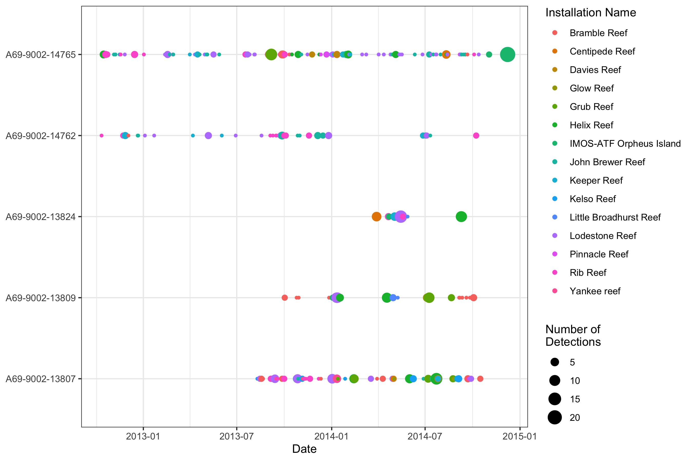
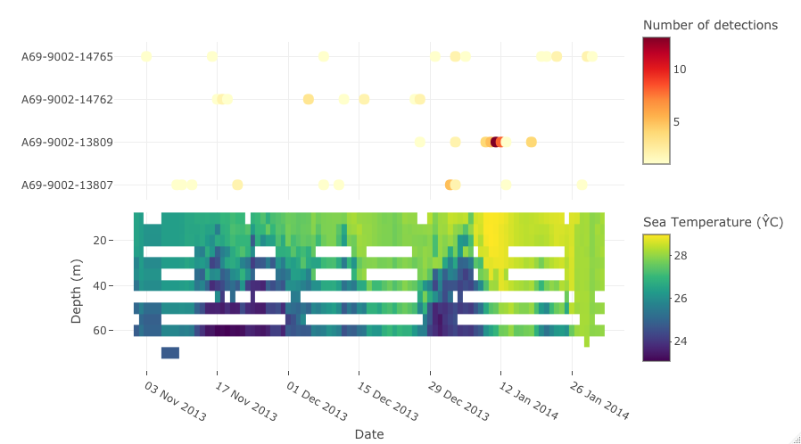
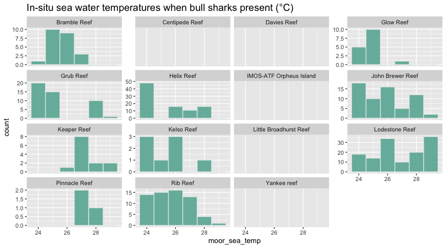

vignettes/extractMoor.Rmd
extractMoor.RmdAnother key functionality of the remora package allows
users to integrate acoustic telemetry data with physical and biological
parameters collected on the IMOS
National Mooring Network. The National Mooring Network is a
collection of mooring arrays strategically positioned in Australian
coastal waters that includes regional arrays of shelf moorings,
acidification moorings, acoustic observatories and a network of National
Reference Stations. This package allows the user to match environmental
data collected from these mooring stations to each tag detection.
Associating environmental data to detections provides a means to analyse
environmental or habitat drivers of occurrence, presence and movement of
animal monitored using acoustic telemetry.
We advocate for users to first undertake a quality control step using
the runQC() function and workflow before further analysis
(see vignette('runQC')), however the functionality to
append environmental data will work on any dataset that has at the
minimum spatial coordinates and a timestamp for each detection event.
Currently, the focus of this package is to integrate animal telemetry
data and environmental data housed within the Integrated Marine Observing System, and
therefore primarily focuses within Australia. As this package develops,
more sources of environmental data will be added to allow for users to
access more datasets across Australia and globally.
This package allows users to access a range of ocean datasets that have undergone a quality control process and housed within the Integrated Marine Observing System database and can also be explored through the Australian Ocean Data Network portal. There are primarily two types of environmental data that users can currently access:
1. Remote sensed environmental data
2. In-situ environmental data from moorings at fixed locations
The imos_variables() function will help the user
identify currently available environmental layers that can be accessed
and associated. Variables include spatial layers including
bathy and dist_to_land, which provide distance
measures of bathymetry (in meters) and proximity to land (in
kilometers). Variable names that start with rs_ are remote
sensed environmental layers, and variables starting with
moor_ include in-situ environmental layers.
| Variable | Platform | Temporal resolution | Units | Function to use | Description | Source |
|---|---|---|---|---|---|---|
| bathy | Composite raster product |
|
meters | extractEnv() | Australian Bathymetry and Topography Grid. 250 m resolution. | Geosciences Australia |
| dist_to_land | Raster product |
|
kilometers | extractEnv() | Distance from nearest shoreline (in km). Derived from the high-resolution Open Street Map shoreline product. | This package |
| rs_sst | Satellite-derived raster product | daily (2002-07-04 - present) | degrees Celcius | extractEnv() | 1-day multi-swath multi-sensor (L3S) remotely sensed sea surface temperature (degrees Celcius) at 2 km resolution. Derived from the Group for High Resolution Sea Surface Temperature (GHRSST) | IMOS |
| rs_sst_interpolated | Raster product | daily (2006-06-12 - present) | degrees Celcius | extractEnv() | 1-day interpolated remotely sensed sea surface temperature (degrees Celcius) at 9 km resolution. Derived from the Regional Australian Multi-Sensor Sea surface temperature Analysis (RAMSSA, Beggs et al. 2010) system as part of the BLUElink Ocean Forecasting Australia project | IMOS |
| rs_chl | Satellite-derived raster product | daily (2002-07-04 - present) | mg.m-3 | extractEnv() | Remotely sensed chlorophyll-a concentration (OC3 model). Derived from the MODIS Aqua satellite mission. Multi-spectral measurements are used to infer the concentration of chlorophyll-a, most typically due to phytoplankton, present in the water (mg.m-3). | IMOS |
| rs_current | Composite raster product | daily (1993-01-01 - present) | ms-1; degrees | extractEnv() | Gridded (adjusted) sea level anomaly (GSLA), surface geostrophic velocity in the east-west (UCUR) and north-south (VCUR) directions for the Australasian region derived from the IMOS Ocean Current project. Two additional variables are calculated: surface current velocity (ms-1) and bearing (degrees). | IMOS |
| rs_salinity | Satellite-derived raster product | weekly (2011-08-25 - 2015-06-07) | psu | extractEnv() | 7-day composite remotely sensed salinity. Derived from the NASA Aquarius satellite mission (psu). | IMOS |
| rs_turbidity | Satellite-derived raster product | daily (2002-07-04 - present) | m-1 | extractEnv() | Diffuse attenuation coefficient at 490 nm (K490) indicates the turbidity of the water column (m-1). The value of K490 represents the rate which light at 490 nm is attenuated with depth. For example a K490 of 0.1/meter means that light intensity will be reduced one natural log within 10 meters of water. Thus, for a K490 of 0.1, one attenuation length is 10 meters. Higher K490 value means smaller attenuation depth, and lower clarity of ocean water. | IMOS |
| rs_npp | Satellite-derived raster product | daily (2002-07-04 - present) | mgC.m_2.day-1 | extractEnv() | Net primary productivity (OC3 model and Eppley-VGPM algorithm). Modelled product used to compute an estimate of the Net Primary Productivity (NPP). The model used is based on the standard vertically generalised production model (VGPM). The VGPM is a “chlorophyll-based” model that estimates net primary production from chlorophyll using a temperature-dependent description of chlorophyll-specific photosynthetic efficiency. For the VGPM, net primary production is a function of chlorophyll, available light, and the photosynthetic efficiency. The only difference between the Standard VGPM and the Eppley-VGPM is the temperature-dependent description of photosynthetic efficiencies, with the Eppley approach using an exponential function to account for variation in photosynthetic efficiencies due to photoacclimation. | IMOS |
| moor_sea_temp | Fixed sub-surface moorings | hourly | degrees Celcius | extractMoor() | Depth-integrated in-situ, hourly time-series measurements of sea temperature (degrees Celcius) at fixed mooring locations | IMOS |
| moor_psal | Fixed sub-surface moorings | hourly | psu | extractMoor() | Depth-integrated in-situ, hourly time-series measurements of salinity (psu) at fixed mooring locations | IMOS |
| moor_ucur | Fixed sub-surface moorings | hourly | ms-1 | extractMoor() | Depth-integrated in-situ, hourly time-series measurements of subsurface geostrophic current velocity in the east-west direction (ms-1) at fixed mooring locations | IMOS |
| moor_vcur | Fixed sub-surface moorings | hourly | ms-1 | extractMoor() | Depth-integrated in-situ, hourly time-series measurements of subsurface geostrophic current velocity in the north-south direction (ms-1) at fixed mooring locations | IMOS |
| BRAN_temp | 3D Raster product | daily (1993-01-01 - present) | degrees Celcius | extractBlue() | Water temperature at specified depth from the surface to 4,509-m depth | Bluelink (CSIRO) |
| BRAN_salt | 3D Raster product | daily (1993-01-01 - present) | psu | extractBlue() | Water salinity at specified depth from the surface to 4,509-m depth | Bluelink (CSIRO) |
| BRAN_cur | 3D Raster product | daily (1993-01-01 - present) | ms-1; degrees clockwise | extractBlue() | Geostrophic velocity in the east-west (UCUR) and north-south (VCUR) directions from the surface to 4,509-m depth. Two additional variables are calculated: BRAN_spd = current velocity (ms-1) and BRAN_dir = current bearing (degrees). | Bluelink (CSIRO) |
| BRAN_wcur | Raster product | daily (1993-01-01 - present) | ms-1 | extractBlue() | Vertical current speed in the water column is calculated (negative = downwards; positive = upwards) using the layers available between the surface to 200-m depths. | Bluelink (CSIRO) |
| BRAN_ssh | Raster product | daily (1993-01-01 - present) | meters | extractBlue() | Sea surface height at the water surface | Bluelink (CSIRO) |
| BRAN_mld | Raster product | daily (1993-01-01 - present) | meters | extractBlue() | Mixed layer depth in relation to the water surface | Bluelink (CSIRO) |
| BRAN_wind | Raster product | daily (1993-01-01 - present) | ms-1; degrees clockwise | extractBlue() | Two variables are calculated, including BRAN_wind_spd = wind velocity (ms-1) and BRAN_wind_dir = wind bearing (degrees). | Bluelink (CSIRO) |
In this vignette we will explore accessing and extracting in-situ
data from the IMOS
National Mooring Network. A suite of additional functions is also
available to access enbvironmental data gatehred via remote sensing (see
vignette('extractEnv')).
extractMoor() function
The primary function to extract and append in-situ data collected by
the IMOS
National Mooring Network to acoustic detection data is the
extractMoor() function. Lets start with a dataset that has
undergone quality control (see vignette('runQC')).
## Example dataset that has undergone quality control using the `runQC()` function
data("TownsvilleReefQC")
## Un-nest the output and retain detections flagged as 'valid' and 'likely valid' (Detection_QC 1 and 2)
qc_data <- TownsvilleReefQC %>%
tidyr::unnest(QC) %>%
dplyr::filter(Detection_QC %in% c(1,2)) Lets have a quick look at the spatial patterns in detection data for each tag deployment:
library(ggplot2)
library(ggspatial)
qc_data %>%
group_by(transmitter_id, station_name, installation_name, receiver_deployment_longitude, receiver_deployment_latitude) %>%
dplyr::summarise(num_det = n()) %>%
ggplot() +
annotation_map_tile('cartolight') +
geom_spatial_point(aes(x = receiver_deployment_longitude,
y = receiver_deployment_latitude,
size = num_det,
color = installation_name),
crs = 4326) +
facet_wrap(~transmitter_id,nrow=3) +
theme(legend.position="bottom")We can also have a look at the temporal pattern in detections:
qc_data %>%
mutate(date = as.Date(detection_datetime)) %>%
group_by(transmitter_id, date, installation_name) %>%
dplyr::summarise(num_det = n()) %>%
ggplot(aes(x = date, y = transmitter_id, color = installation_name, size = num_det)) +
geom_point() +
theme_bw()
Lets have a quick look at the spatial arrangement of the IMOS National Mooring Network.
In this example, we will identify and plot the location of moorings in Australian coastal waters which have records of sea water temperature
Each variable will need to be accessed one at a time using the
mooringDownload() function. There is only one parameter
within the function that can help the user identify the variable
required:
temperature,
velocity, salinity, oxygen.
# Generate a table containing IMOS moorings metadata for only those moorings with temperature data
moorT <- mooringTable(sensorType="temperature")
# PLot the location of the moorings with associated metadata
library(leaflet)
leaflet() %>%
addProviderTiles("CartoDB.Positron") %>%
addMarkers(lng = moorT$longitude, lat = moorT$latitude,
popup = paste("Site code", moorT$site_code,"<br>",
"URL:", moorT$url, "<br>",
"Standard names:", moorT$standard_names, "<br>",
"Coverage start:", moorT$time_coverage_start, "<br>",
"Coverage end:", moorT$time_coverage_end))To identify which is the appropriate mooring with which to append to
our acoustic detections, we’ll run the getDistance()
function. This function will assign the moor_site_code of
the closest mooring to each tag detection, the straight line distance of
the mooring to the receiver station location
(closest_moor_km), along with the mooring’s temporal
coverage (moor_coverage_start and
moor_coverage_end), and whether or not the
detection_datetime stamp falls within this coverage period
(is.coverage = TRUE/FALSE).
In this function, the user specifies which detection dataset with which they which to merge with the available moorings data.
mooringTable() function.
#Extract the nearest mooring to each station where a tag was detected
det_dist <- getDistance(trackingData = qc_data,
moorLocations = moorT,
X = "receiver_deployment_longitude",
Y = "receiver_deployment_latitude",
datetime = "detection_datetime")In order to identify which moorings do not have temporal coverage
during the period when tag detections were obtained, we have provided
the getOverlap() function. In this function, we simply
enter the detection dataset (det_dist) which also contains
the nearest moorings data generated using the above
getDistance() function. What is returned is a table
containing the proportion of tag detections that fell within the
coverage period of the mooring deployment at which it was assigned:
moor_site_code, moor_coverage_start and
moor_coverage_end.
# Which moorings have overlapping data with detections?
mooring_overlap <- getOverlap(det_dist)
mooring_overlapAs Poverlap = 1 for all three moorings datasets, all our
detections have temporal overlap with these mooring deployments. IF some
of the moorings had partial/no coverage during the tag release period,
we would consider dropping these from the moorT object before re-running
the getDistance() function.
Let’s plot the spatial arrangement of these mooring stations on an interactive map with our tag detections at receiver stations.
# Filter for only those moorings which are closest to receivers and also have overlapping detection intervals
moorT_new <- moorT %>%
filter(site_code %in% mooring_overlap$moor_site_code)
#Summarise dataset so only a single row per receiver station
qs_stat <- qc_data %>%
group_by(station_name, installation_name,
receiver_deployment_longitude,
receiver_deployment_latitude) %>%
dplyr::summarise(num_det = n(),
first_detection = min(detection_datetime),
last_detection = max(detection_datetime))
# make palette for number of detections at stations
library(viridisLite)
domain <- range(qs_stat$num_det) # get domain of numeric data for colour scalse
pal <- colorNumeric(palette = viridis(100), domain = domain)
# Draw the map
leaflet() %>%
addProviderTiles("CartoDB.Positron") %>%
addMarkers(lng = moorT_new$longitude, lat = moorT_new$latitude,
popup = paste("Site code", moorT_new$site_code,"<br>",
"URL:", moorT_new$url, "<br>",
"Standard names:", moorT_new$standard_names, "<br>",
"Start:", moorT_new$time_coverage_start, "<br>",
"End:", moorT_new$time_coverage_end)) %>%
addCircleMarkers(data=qs_stat,
lng = qs_stat$receiver_deployment_longitude,
lat = qs_stat$receiver_deployment_latitude,
radius = 6,
color=~pal(num_det),
stroke=FALSE,
fillOpacity=0.5,
popup = paste("Station name", qs_stat$station_name,"<br>",
"Installation name:", qs_stat$installation_name, "<br>",
"Tag detections:", qs_stat$num_det, "<br>",
"First tag detection:",qs_stat$first_detection, "<br>",
"Last tag detection:",qs_stat$last_detection))Now that we have matched each animal detection with an appropriate
moor_site_code, we will download the data time series for
moorings derived water temperature for each mooring site code
from the AODN Thredds file sever.
Although this function provides the capacity to download various
sensor types (i.e. temperature, velocity,
salinity or oxygen), each variable can only be
accessed one at a time using the mooringDownload()
function. The netCDF files should then be saved locally within the
working directory (e.g. within the folder
imos.cache/moor/temperature).
There are a few parameters within the function that can help the user identify the variable required, and to manage the downloaded environmental layers:
imos_variables() for available
variables and variable names)TRUE) or uploaded from an
existing folder within the working directory (FALSE)?fromWeb = TRUE) or uploaded (if
fromWeb = FALSE)
## Creates vector of moorings that we want to download
moorIDs <- unique(mooring_overlap$moor_site_code)
## Download each net cdf from the Thredds server to a specified folder
## set fromWeb = FALSE if loading from an existing folder within the working directory
moorDat.l <- mooringDownload(moor_site_codes = moorIDs,
sensorType="temperature",
fromWeb = TRUE,
file_loc="imos.cache/moor/temperature",
itimeout=240)
names(moorDat.l) # What moorings datasets do we have in memory
#[1] "GBRMYR" "GBRPPS" "NRSYON"As we set fromWeb to TRUE, the downloaded
layers will be cached within the specified file_loc
folder within the working directory. Each time the function is called,
downloaded layers are cached into this folder.
When downloading temperature data, two variables are
downloaded: sensor depth (moor_depth) and sea temperature
(moor_sea_temp).
When downloading current data, three variables are
downloaded: sensor depth (moor_depth), surface geostrophic
velocity in the north-south direction (moor_vcur) and the
east-west direction (moor_ucur).
When downloading salinity data, two variables are
downloaded: sensor depth (moor_depth), and sea water
practical salinity (moor_psal).
When downloading dissolved oxygen data, four variables
are downloaded: sensor depth (moor_depth),
moor_mole_concentration_of_dissolved_molecular_oxygen_in_sea_water,
moor_moles_of_oxygen_per_unit_mass_in_sea_water and
moor_volume_concentration_of_dissolved_molecular_oxygen_in_sea_water.
We can use the moorings data we’ve extracted to plot an interactive depth-time plot showing three-dimensional variability in the physical parameter of interest over a specified time period, and then plot the animal tracking detections which are close to this mooring. When hovering on the plot, a vertical line will appear so that it is easier to find the environmental variable associated to the detection.
For example, we might want to plot temperature over depth at the
GBRPPS mooring, GBRPPS, and then add all the bull shark
detections over the same time period from the closest IMOS Animal
Tracking Facility installation.
plotDT(moorData=moorDat.l$GBRPPS, # have GBRMYR, GBRPPS and NRSYON available
moorName="GBRPPS",
dateStart="2013-11-01",
dateEnd="2014-02-01",
varName="temperature",
trackingData=det_dist,
speciesID="Carcharhinus leucas",
IDtype="species_scientific_name",
detStart="2013-11-01",
detEnd="2014-02-01")
We can also visualise current velocity data with the
detections, where moorings have velocity sensors. For example, we can
visualise the zonal, North-South (v) velocity (vcur) at the
the same mooring, and plot the bull shark detections associated with
that mooring.
We need to make sure that the NetCDF file we have stored locally
contains the velocity data. To achieve this, we firstly need to download
this netCDF file using the mooringDownload() function and
then save the file to a different folder location, in this case
imos.cache/moor/velocity.
plotDat.l <- mooringDownload(moor_site_codes = "GBRPPS",
fromWeb = TRUE, # Download the netCDF. If already downloaded, set as FALSE
sensorType="velocity", # sensor data to download
file_loc="imos.cache/moor/velocity", # Location where the netCDF is stored/saved
itimeout=240)
# plot the moorings data
plotDT(moorData=plotDat.l$GBRPPS,
moorName="GBRPPS",
dateStart="2013-11-01",
dateEnd="2014-02-01",
varName = "vcur",
trackingData=det_dist,
speciesID="Carcharhinus leucas",
IDtype="species_scientific_name",
detStart="2013-11-01",
detEnd="2014-02-01")Say we wanted to match each animal tag detection to the nearest mooring sensor value. How would we achieve this?
In this example, we will extract moorings derived water temperature collected from the nearest sensor in the IMOS National Mooring Network to a tag detection at an acoustic receiver.
Sea water temperature, current velocity, or
salinity data can be accessed one at a time using the
extractMoor() function. There are a few parameters within
the function that can help the user identify the variable required, and
to manage the downloaded environmental layers:
temperature, velocity or
salinity.Inf, which allows to run the
function without a timeout threshold.Inf, which allows to run the function
without distance threshold.NA, which returns all
sensor records at this mooringmin) or
higher (max) depth value be returned? Users can also
specify a mean of the available values, or NA
to return both sensor values.By default, each of the environmental sensors positioned on a mooring will be returned for a certain timestamp. For example, if 10 sensors are positioned on a mooring, each hourly timestamp for that mooring witll have 10 sensor readings.
data_with_mooring_sst_all <- extractMoor(trackingData = det_dist,
file_loc="imos.cache/moor/temperature",
sensorType = "temperature",
timeMaxh = Inf,
distMaxkm = Inf)We can see the extracted environmental variables are appended as new
columns to the input dataset as a nested tibble. You can look at the
contents of this by using the unnest() function in the
tidyr package.
data_with_mooring_sst_all # By default the output is a nested tibble
# Unnest tibble to reveal the first 10 rows of the data
data_with_mooring_sst_all %>%
tidyr::unnest(cols = c(data))If we wanted to extract the sensor positioned at the shallowest depth
available on a mooring, we can do so by setting the parameter
idepth = 0. Alternatively if there is a preferred depth at
which you would like to extract, the function will select the nearest
sensor to this value.
You can increase the sensitivity of the extractMoor()
function by setting a maximum time threshold (in hours) for the period
you are willing to allow between tag detection and mooring timestamps
(timeMaxh). You can also add a distance threshold
(distMaxkm) for maximum allowed distance (in kilometers)
between moorings and receiver station locations.
In this example, we will limit our function so that only detections within 24h and 50km of moorings are allocated with sensor value readings.
As each mooring line has multiple sensors deployed at various depths,
we can specify which sensor we want returned by setting a
targetDepthm. Here we set this as
targetDepthm=0 to return the sensor value that is nearest
to the water surface.
# Run the same function again with time and distance thresholds
# and when multiple sensors are available return the shallowest value at that time stamp
data_with_mooring_sst_shallow <- extractMoor(trackingData = det_dist,
file_loc="imos.cache/moor/temperature",
sensorType = "temperature",
timeMaxh = 24,
distMaxkm = 50,
targetDepthm=0,
scalc="min")
data_with_mooring_sst_shallowNotice that this new merged dataset
data_with_mooring_sst_shallow is now much smaller than the
original one data_with_mooring_sst_all? This is because we
have extracted only selected a single sensor value for each detection
timestamp. We have also dropped those rows from the dataset which not
did meet the time and distance thresholds.
Now let’s see how the detections of our tagged animals corresponded
with variations in sea water temperature. First let’s add the in-situ
temperature values to the detection plots grouped by
transmitter_id:
summarised_data_id <-
data_with_mooring_sst_shallow %>%
tidyr::unnest(cols = c(data)) %>%
mutate(date = as.Date(detection_datetime)) %>%
group_by(transmitter_id, date) %>%
dplyr::summarise(num_det = n(),
mean_temperature = mean(moor_sea_temp, na.rm = T))
library(ggplot2)
ggplot(summarised_data_id, aes(x = date, y = transmitter_id, size = num_det, color = mean_temperature)) +
geom_point() +
scale_color_viridis_c() +
labs(subtitle = "In-situ sea water temperature (°C)") +
theme_bw()Alternatively we can view the appended detection plots grouped by
station_name for only those installations which have
mooring sensor data associated with it:
summarised_data_id <-
data_with_mooring_sst_shallow %>%
tidyr::unnest(cols = c(data)) %>%
mutate(date = as.Date(detection_datetime)) %>%
group_by(installation_name, date) %>%
dplyr::summarise(num_det = n(),
mean_temperature = mean(moor_sea_temp, na.rm = T)) #%>% drop_na(mean_temperature)
ggplot(summarised_data_id, aes(x=date,y=installation_name,
size=num_det,color=mean_temperature)) +
geom_point() +
scale_color_viridis_c() +
labs(subtitle = "In-situ sea water temperature (°C)") +
theme_bw()Finally, we can plot the sensor values associated to a detection as a histogram showing the number of detection records associated with each sensor value.
library(hrbrthemes)
# First plot the temperature data
data_with_mooring_sst_shallow %>%
tidyr::unnest(cols = c(data)) %>%
ggplot(aes(x=moor_sea_temp)) +
geom_histogram(binwidth=1,fill="#69b3a2",color="#e9ecef",alpha=0.9) +
facet_wrap(~installation_name,scales="free_y",drop=TRUE) +
ggtitle("In-situ sea water temperatures when bull sharks present (°C)") +
#theme_ipsum() +
theme(
plot.title = element_text(size=15)
)
# Next plot the depth data
data_with_mooring_sst_shallow %>%
tidyr::unnest(cols = c(data)) %>%
drop_na(moor_sea_temp) %>%
ggplot(aes(x=moor_depth)) +
geom_histogram(binwidth=5, fill="#69b3a2", color="#e9ecef", alpha=0.9) +
ggtitle("Depths of sea water temperature readings (m)") +
theme_ipsum() +
theme(
plot.title = element_text(size=15)
)Vignette version 0.1.2 (05 Nov 2021)